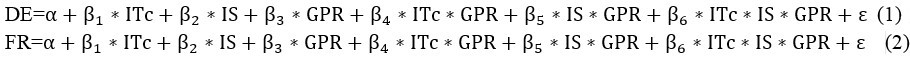

The impact of information technology capability, information sharing and government process redesign on the operational performance of emergency incident management systems
Bo Fan
School of International and Public Affairs, Shanghai Jiao Tong University, No.1954, Huashan Road, 20030, Shanghai, China.
Introduction
Multi-agency disaster management requires collaboration among geographically distributed public and private organizations to enable rapid and effective response to an unexpected event. When disaster strikes, the complex task environment requires multiple organizations to transform their roles from autonomous actors into interdependent decision-making teams (Bharosa et al. 2010). Relevant information should be collected from multiple sources by information technology facilities, verified for accuracy, and shared with appropriate responding organizations within a short time period to ensure coherent coordination. A cross-agency workflow should be created to ensure efficient rescue. Emergency management information systems for disaster relief are developed in contexts that involve inter-governmental organizations, local agencies, and non-governmental organizations. Although the multi-organizational nature of disaster response is known to create challenges in information systems development, scant attention has so far been paid to their cross-agency nature. Cross-agency processes can be created only by integrated information systems that deliver timely and accurate information, and support inter-organizational processes. According to Malone and Crowson (1994), a coordination system is the arrangement of system components, the sequence of activities, and the interactions between system components and their activities in a system. Collaborative e-government has been an important strategy to attain effectiveness and efficiency in government administration and public service (Dawes 2008; Dawes et al. 2009).
Government process redesign is an approach to improve cross-boundary organizational performance by focusing on business processes and their efficiency (Davenport and Short 1993; Hammer 1990). Information technology provides the government with the flexibility to redesign processes and create a high-performing organizational design. This flexibility results, in part, from the information processing capabilities enabled by modern information technology, capabilities that were previously unavailable when many existing business processes were originally designed but are now required by modern work practices (Davenport and Short 1993). Research demonstrates that information technology plays an important complementary role in process redesign while technology investment serves as an important complement to work practices associated with organizational change (Hitt and Brynjolfsson 1997). Cross-boundary information sharing and government process redesign are important during e-government development because critical information for running government operations is usually scattered across agencies in their own respective information systems. The demand for cross-boundary information sharing and government process redesign exists not only across different levels of government agencies (the vertical dimension) but also among government agencies with different functionalities (the horizontal dimension). With cross-agency information sharing and government process redesign, highly effective actions can be applied to solve complex problems, and electronic data are easy to duplicate and manipulate. Thus, cost reductions and efficiency are realised, and government agencies can act faster to identify problems and react promptly (Landsbergen and Wolken 2001).
This study examines three related research questions. First, we ascertain whether information technology capability, information sharing, government process redesign, and their interrelated portfolios significantly predict the overall collaborative performance of incident response. Second, as each significant factor or portfolio is divided into different developing stages, we aim to detect the determinants in the developing stages which affect collaborative performance. Third, we seek to describe how user behaviour affects collaborative performance through input factors and portfolio. These issues are analysed in depth using a unique data set derived from a collaborative emergency information system in Shanghai, China. Our research contributes to the literature by analysing an entire cross-agency portfolio of collaborative emergency systems, and by assessing their performance impact, particularly in information technology capability, information sharing, government process re-engineering and user behaviour.
In this study, federal enterprise architecture is employed as the basic framework to analyse the construction of a collaborative emergency information system across different agencies in Shanghai. We contribute to the literature by analysing the interplays among process redesign, information technology, information sharing, and their subsequent effects on collaborative performance using a federal enterprise architecture background. In the next section, we describe theoretical foundations, explicate our research methodology and develop our research hypotheses for each phase. We then illustrate our data sources, test the hypotheses and explain the experimental results. Finally, we summarise key findings and discuss implications.
Literature review
The collaborative emergency information system is a human–computer interaction system that includes the elements of information technology, information sharing, process redesign and collaborative performance. Studies on these four components and their relations are reviewed below.
Information technology and information sharing
Information technology, defined as computer and related digital communication technology, has extensive power to reduce the costs of coordination, communication, and information processing (Brynjolfsson and Hitt 2000). In both intra- and inter-agency interactions, information is considered a primary asset that needs to be produced, retrieved, processed, enriched, validated, consumed and/or distributed within the inter-agency network. Owing to the dynamic environment during a disaster, information may already be outdated by the time it is collected (Fisher and Kingma 2001). For instance, in the case of a major disaster, the state and configuration of human or other resources continuously change. The high level of uncertainty (Argote 1982) and unpredictability with regard to the required information highlight the crucial role played by information technology (Longstaff and Yang 2008). As a disaster unfolds, dealing with uncertainty often requires action that simultaneously generates raw information for sharing across government agencies (Weick 1988).
Information technology is essential to improve information sharing and decision making among emergency responders (Bharosa et al. 2010), as it has already drastically reshaped the way organizations interact with each other (Lee and Whang 2000; Fan 2013). High levels of technology use are likely to result in high levels of information sharing. However, the technological aspects of information sharing systems do not always facilitate coordination and sharing of disaster-related information because information sharing is not only a technology issue but also an organizational and cultural concern. Like most government organizations, city agencies have neglected technological aspects to create an environment in which data flow across functional boundaries. The bureaucratic nature and stove-piped structure of organizations have created a culture in which data sharing is often regarded as a relinquishing of power and authority (Chang et al. 2008; Fan and Luo 2013).
Information technology, information sharing and process redesign
Information technology provides organizations with the flexibility to redesign processes and create a high-performing organizational design. This flexibility results, in part, from information technology enabled information processing capabilities that were previously unavailable when many existing business processes were originally designed but are now required by modern work practices (Davenport 1990; Hitt and Brynjolfsson 1997). Information technology facilities offer a common data exchange/sharing infrastructure across an organization, providing work cells with the ability to access all functional data necessary to complete their assigned tasks. Broadband networks allow free flow of information, enabling the timely sharing of critical data with employee teams regardless of location (Bresnahan et al. 2002). A decision support system can improve organizational decision making through the effective analysis of vertical data sharing among different hierarchies (Malone and Crowston 1994). All types of business processes can be redesigned to ignore organizational boundary and data exchange among stakeholders based on information technology.
Information technology, information sharing, process redesign and collaborative performance
The performance of an information technology based coordination system can be measured from many different perspectives and at different levels (Broadbent et al. 1999). In the case of coordination between business partners, at least two perspectives and three levels are relevant. The three levels are individual, firm, and supply chain, and the two perspectives are economic and social (Kahai and Cooper 1999; Lee and Kim 1999). The economic perspective defines performance primarily in terms of time- and cost-related measures. By contrast, defining performance from a social perspective can include user satisfaction, non-economic organizational goals and partnership quality. Taking the performance of a supply chain as an example, Wang and Tadisina (2007) denoted that business process redesign is a significant factor that leads to the successful reduction of time and cost in supply chain response. In addition, Ramirez et al. (2010) found that information technology capability, government process redesign and the interaction of information technology capability and government process redesign portfolios, are positively associated with supply chain productivity and market value.
Several studies also suggest that collaborative performance is moderated by behavioural factors in a shared information system. For instance, Burke and Chidambaram (1999) suggested that the fit between technological characteristics and human behaviour patterns changes collaborative performance. These human behaviours may impede the effectiveness of new communication technology (Wang and Tadisina 2007).
Research gap
Several studies have found evidence of poor information sharing and coordination in inter-agency disaster response situations (Helsloot 2005), which can be attributed to their cross-agency nature. Although these studies have examined this area, systematic empirical analyses of information technology capability, information sharing, government process redesign, user behaviour, and collaborative performance during multi-agency incident response are relatively scarce. One practical reason for this state of affairs is the difficulty in collecting empirical data during a real disaster due to the lack of mature collaborative information systems that have operated for years to preserve enough records of incident events. Consequently, quantitative studies that explore the causal effects among the mentioned factors are very limited.
In our research, we conducted a series of studies based on a three-step analysis.
First, we employed federal enterprise architecture and behaviour theory as our research framework, and then explored whether information technology capability, information sharing, government process redesign, and their interactions have causal effects on collaborative performance. By using real e-government data from emergency centres in the Shanghai municipal government in China, we identified the factors and the interplays that significantly enhanced collaborative performance in emergency information sharing. The ordinary least square regression method is used to test statistically significant predictors, including all factors and their interplay.
Second, each factor that significantly predicts collaborative performance consists of numerous components. For example, information technology capability consists of evolving processes, yet the determinant stages that improve the performance of collaboration remain undetermined. By employing factorial experiment design, we used the paired sample T-test method to find stage combinations that effectively determine output performance.
Third, sensitivity analysis simulated user behaviour. In the factorial experiment setting, all utilisation probability was set to 100%. The use of a federal enterprise architecture information system component was manipulated by adjusting the probability of the significant factors. Drawing from previous research that states human behaviour affects information technology performance, we explored how use decides the output performance of information sharing, government process redesign and their potential interaction patterns.
Research models
Federal enterprise architecture defines and interrelates data, hardware, software and communications resources, as well as the supporting organization required to maintain the overall physical structure required by the architecture (Richardson et al. 1990). This tool enables the municipal government to identify opportunities for leveraging technology and alleviating redundancy, or to highlight where agency overlap limits the value of information technology investments (Janssen et al. 2010). The federal enterprise architecture facilitates the horizontal integration of information technology resources and establishes the line of sight contribution of information technology to mission and organizational performance (Arora and Kumar 2000). The outcome becomes more citizen-centred and event-centred. As with any architecture effort, the development of a federal enterprise architecture is an iterative and continuous process. One major task of our research was to identify user behaviour in a federal enterprise architecture-based platform that possibly affects the performance of a collaborative emergency information system. Figure 1 shows the research framework established together with federal enterprise architecture.
According to Zachman (1987, 1997), federal enterprise architecture is an ideal concept for constructing collaborative information systems. The framework mainly consists of four components: business reference model, data reference model, technology reference model and performance reference model (Arora and Kumar 2000). The business reference model describes the business lines of the federal government, which promote agency collaboration by redesigning operational and service processes for the citizen; it is similar to the business model of process re-engineering (CIOC, 1999). The technology reference model provides not only a foundation to describe the standards and technologies that support secure delivery but also the construction of business functional components for e-government solutions (Zachman 1997). The data reference model provides business-focused data standardisation and cross-agency information exchanges, which are the infrastructure of information sharing across different public agencies (CIOC 1999; Ramirez et al. 2010). Wang and Tadisina (2007) also proposed that the performance of a multi-agent system is affected by user behaviour defined as the parameter P. They conducted several experiments and proved the significance of utilisation factor on collaborative outcomes. As such, the interrelations among components can be identified based on the framework. The relationships among the five components are illustrated in Figure 1, where the business reference model, data reference model and technology reference model, together with P, are the factors that predict the performance reference model. Thus, the data reference model and technology reference model are the input factors of the business reference model and predict the performance reference model through the business reference model. Meanwhile, the utilisation factor P yields indirect effects on the performance reference model through the business reference model, data reference model and technology reference model.
Independent variables
From the above description, we conclude that the business reference model is the business counterpart of government process redesign. Therefore, government process redesign is regarded as one of the independent variables in our research. The technology reference model also suggests that information technology capability is an important variable predicting the business reference model and performance reference model. The data reference model is mainly concerned with information sharing, which is considered as another predicting variable. Existing validated scales are adopted where possible and new scales are developed elsewhere based on previous literature. Scales for government process redesign and information sharing are modified from the value construct of previous studies in the context of emergency background. The measurement items for information technology capability are self-developed based on the definition of relative studies (Brynjolfsson and Hitt 2000; Ramirez et al. 2010). Through a Q-sorting progress, we propose measuring information technology capability by four items, namely, main framework of information technology, information technology functionality, information technology maintenance and human resource training. The metrics and questionnaire of the mentioned variables are described in table 1.
| Factors | Indicators | Literature resources |
|---|---|---|
| Information technology capability |
1. Main framework of information technology. (How good is the information technology framework of the system?) 2. Information technology functionality. (How good is the information technology functionality of the system?) 3. Information technology maintenance. (How good is the information technology maintenance of the system?) 4. Human resource training. (How good is the human resource training for the system?) |
(Self-developed, based on Bresnahan et al. 2002 and Davenport 1990) |
| Government process redesign |
1. Process simplification. (To what extent does the system support process simplification?) 2. Creation of cross-functional units. (To what extent does the system support the operations of cross-functional units?) 3. Major information system redesign. (To what extent does the system support major information system redesign?) 4. Doing the same work with fewer people. (To what extent does the system support doing the same work with fewer people?) |
(Ramirez et al. 2010) |
| Information sharing |
1. Integrating data from different public agencies. (How good is your government at integrating data from different public agencies?) 2. Combining information from different public agencies. (How good is your government at combining information from different public agencies?) 3. Combining data from different public agencies. (How good is your government at effectively combining data from different public agencies?) |
(Wixom and Todd 2005) |
| Delivery efficiency |
1. Quality of delivered reliefs. (How good is the system at enhancing the quality of delivered reliefs?) 2. On-time delivery of reliefs. (How good is the system at facilitating on-time delivery of reliefs?) 3. Information richness in carrying out delivery. (How good is the system at enriching information in carrying out delivery?) 4. Delivery reliability performance. (How good is the system at enhancing delivery reliability performance?) |
(Gunasekaran 2004) |
| Flexibility response |
1. Ability to respond to and accommodate demand variations. (To what extent does the system enhance ability to respond to and accommodate demand variations?) 2. Ability to respond to and accommodate periods of poor delivery performance. (To what extent does the system enhance ability to respond to and accommodate periods of poor delivery performance?) 3. Ability to respond to and accommodate new environmental change. (To what extent does the system enhance ability to respond to and accommodate new environmental change?) |
(Slack 1991) |
Dependent variables
Collaborative emergency management is a type of collaborative governance that assembles public and private stakeholders in collective forums with public agencies to engage in consensus-oriented decision making (Ansell and Gash 2008). The federal enterprise architecture structure is designed to clearly articulate the cause-and-effect relationship between inputs and outcomes. The performance reference model helps agencies produce enhanced performance, improve alignment and identify improvement opportunities that span traditional organizational boundaries. Current performance reference model measures focus more on online service for citizens and businesses, instead of the government, and on government functions for back-office systems. The collaborative emergency information system is a back-office system for incident rescue, which requires collaborative patterns across agencies on a uniform platform. Unfortunately, no literature provides detailed measures on collaborative governance performance. Thus, we borrow the metrics for supply chain management, a collaborative business pattern common in cross-agency incident response activities. Company boundaries change as companies discover new ways of working together to achieve the ultimate supply chain goal: to fill customer orders faster and more efficiently than their rivals. Given the cross-functional nature of many supply chain improvements, metrics must be developed to prevent organizational silo behaviour that hinders supply chain performance. Therefore, a supply chain measurement system must emphasise three separate types of operational performance measures: resource, output and flexibility (Gunasekaran et al. 2004; Beamon 2000). The important characteristics of these three types of measures and the interrelationship between supply chain management measures and cross-agency performance are illustrated in Table 2.
| Supply chain management | Collaborative emergency information system |
|---|---|
|
Resources Resource cost minimization is critical to enhance the profitability for supply chain management. A general goal of supply chain analysis is resource minimization to achieve maximum profit. |
Resource cost is not so important for emergency management because many emergencies relate to human lives and may trigger bigger disasters. Thus, incident rescue in government is carried out at all costs. |
|
Output Output performance measures must correspond to the customers’ goals and values, as strategic goals generally address the timely meeting of customer requirements. |
Output performance measures of collaborative emergency information system must correspond to good delivery of incident event requirements. Here, delivery efficiency is used to denote output performance. |
|
Flexibility In an uncertain environment, supply chains must be able to respond to change. |
Specifically, emergency events exist in more uncertain and complex environments, and a collaborative emergency information system should be able to respond to change. |
According to Stewart (1995), an increase in delivery performance at the operational level is possible through a reduction in lead time attributes. Another important aspect of delivery performance is on-time delivery. On-time delivery reflects whether perfect delivery has occurred and measures customer service level (Gunasekaran et al. 2004). Thus, delivery efficiency is measured by the quality of delivered reliefs, on-time delivery of reliefs, information richness in carrying out delivery, and delivery reliability performance (Gunasekaran et al. 2004). Flexibility is vital to the success of the supply chain at the operational level because the supply chain exists in an uncertain environment. Flexibility is defined as the extent to which the operation can be changed (Slack 1991). Flexibility response refers to the ability to respond to and accommodate demand variations, periods of poor delivery performance and new environmental change (Slack 1991). Although the flexibility of collaborative stakeholders is limited, the collaborative chain can be designed to adapt adequately to the uncertain environment. Detailed metrics of delivery efficiency and flexibility response are derived from previous research (Table 1).
Data survey and case description
Case description
Our survey and experimental design was conducted through a project called the collaborative urban management and emergency system in the Shanghai municipal government in China. Each urban district in Shanghai is divided into many grids based on a geographical information system platform, with each grid assigned to an inspector who detects conventional urban emergencies such as drain covers and sagging electrical cables. Using a wireless phone with camera and global positioning system function, the inspector takes photos of the incident spots and sends them to the back-office platform hosted in an event-receiving centre. The incident spot, displayed in the exact place by both geographical information system and global positioning system function, is accepted by a member of the receiving centre. After registering at the receiving centre, the event proceeds to the command centre, which quickly dispatches the event to the relevant agencies in charge of the event. The agency handling the problem is obliged to fulfil the task within a set time. Next, the inspector in charge of the grid takes a photo of the same location once the emergency is over. In the system, a series of information technologies, including wireless phone, geographical information system and global positioning system, is employed. Information sharing of geographical data is required among the receiving centre, command centre and other related public sectors. In addition, a completely new process — from event discovery, receiving, dispatching, handling and completing — is established, and the strict norm is redesigned to enhance collaborative performance during the incident. The four types of emergencies are composed of 21 incident transactions, as denoted in the Appendix. If the task is handled only by a public agency, with or without sufficient cross-agency collaboration, it will likely lead to low response efficiency. Nine district governments in Shanghai employ this mode and around 1000 government employees are involved in the system.
Data analysis
Phase 1: Regression analysis
Research demonstrates that information technology plays an important and complementary role in process redesign. For example, Hammer (1990) presents a number of high-profile case studies in which dramatic productivity improvements were achieved through the use of business process redesign and information technology. Many other references prove the benefits of deploying business process redesign with sufficient aid from information technology (Appelbaum and Blatt 1994; Davenport and Short 1990; Dawes et al. 2009). Government process redesign is in fact an advancement of business process redesign in the government context. In the business context, each collaborative project may depend on basic information technology elements, such as business process redesign projects that utilise basic information technology infrastructure including personal computers, laptops and Internet-based networks. Thus far, we have not identified a single study that examines the link between information technology enabled government process redesign and the collaborative performance of emergency information system using real-incident process redesign projects. The government process redesign projects may also require specific information technology, such as a geographical information system program to display and analyse the spatial circumstance of incident events. Existing research has identified information technology based government process redesign as a significant factor contributing to the delivery efficiency of supply chain management (Gunasekaran et al. 2004). Business process redesign accelerates the speed of customer service and the efficiency that is highly dependent on information technology facilities and capabilities (Beamon 2000). Thus, information technology capability, especially mobile information technology technology, can provide flexible ways for various units to communicate and collaborate with one another ((Stefanovic and Stefanovic 2008, Tang and Tomlin 2008). Therefore, information technology capability and the business process can work together in an uncertain and changeable environment (Gong 2008). To realise a more robust and flexible cooperation process, information technology capability should meet the requirements of advanced information technology devices, information technology maintenance costs and training expenses (Brynjolfsson et al. 2002). Therefore, we hypothesise the following:
Hypothesis 1a.The interaction between information technology capability (ITc) and the government process redesign portfolio (ITc*GPR) is positively associated with the flexibility response (FR) of the cross-agency incident response.
Hypothesis 1b.The interaction between information technology capability (ITc) and the government process redesign portfolio (ITc*GPR) of an organization is positively associated with the delivery efficiency (DE) of the cross-agency incident response.
The literature on information sharing in the business process is proliferating. To achieve efficient, flexible and adaptable teams, we must implement arrangements that allow team members to exchange adequate information for them to understand and adapt to numerous goals and constraints (Sproull and Kiesler 1991). Efficiency, flexibility, learning ability and a deep understanding of team goals are all necessary for survival in changing environments, which are theoretically achievable through information sharing. The aim of the process redesign exercise is to streamline existing unstructured processes subjected to degrees of information sharing between supply chain levels (Lee et al. 2000; Li 2002). Cross-agency teamwork for incident management strongly influences information sharing and exchanging, and jointly enhances collaborative efficiency and flexibility response. Therefore, we hypothesise the following:
Hypothesis 2a. The interaction between information sharing (IS) and the government process redesign portfolio (IS*GPR) is positively associated with the flexibility response (FR) of the cross-agency incident response.
Hypothesis 2b. The interaction between information sharing (IS) and the government process redesign portfolio (IS*GPR) is positively associated with the delivery efficiency (DE) of the cross-agency incident response.
Two regression equations are utilised to test our hypotheses. To test hypotheses 1a and 2a, the first equation is employed to examine factors that affect the delivery response of the output, including between information technology capability and government process redesign and between information sharing and government process redesign, both in terms of main and interactive effects. To test hypotheses 1b and 2b, we employ the second equation to test the flexibility performance impact of information technology capability and government process redesign, and of information sharing and government process redesign, both in terms of main and interactive effects. We therefore estimate using the equations as follows:

The variables GPR*ITc, GPR*IS, and GPR*IS*ITc represent the interaction terms between information technology capability and government process redesign, between information sharing and government process redesign, and among information sharing, information technology capability and government process redesign, respectively.
Statistical results for phase 1
The variables in phase 1 were measured by quantifying the responses to survey questions using a five-point Likert scale that ranges from 'low degree' to 'high degree'. All of the variables were measured by multiple composite indices: three items for information sharing, four items for government process redesign, four items for information technology capability, three items for flexibility response, and four items for delivery efficiency. The majority of these items were adopted from previous studies (table 1). These factors and indicators were evaluated through a questionnaire administered in July 2012. Our survey consisted of 36 public agencies in Shanghai, China, in which nearly 1000 persons have experienced utilising a collaborative emergency information system. We distributed 625 questionnaires to respondents who were participants in the system. Among the total, 403 questionnaires were returned and 286 were considered valid. With 18 items in the questionnaire and a threshold for factor analysis of at least five times as many observations as the variables for analysis (Hair et al. 1998; Stevens 1996), at least 90 subjects were required in the approach. The total number of 286 valid questionnaires in our survey exceeded this threshold. Using confirmatory factor analysis, we examined the survey data to determine if the outcome variables demonstrated the expected good model fit, reliability and validity.
We built a correlation model for every two factors that include three independent and two dependent variables. The overall fit of the model for the final set of 18 items is ?2/df = 224.378/125 = 1.795 (1<?2/df><3), normed fit index = 0.933 (>0.9), adjusted goodness of fit index = 0.893 (>0.8), incremental fit index = 0.969 (>0.9), comparative fit index = 0.969 (>0.9), and root mean squared error of approximation = 0.053 (<0.1). The values in the brackets are the threshold of the said parameters, indicating an adequate fit. Composite reliability, model factor loadings with p-value, and average variance extracted were then calculated. Acceptable values for composite reliability and for average variance extracted should exceed 0.7 and 0.5 respectively. Table 3 shows that the composite reliability and Cronbach's alpha values for all five constructs are greater than 0.8, demonstrating sufficient reliability (Bhattacherjee and Premkumar 2004). Additionally, average variance extracted is greater than 0.5 for all constructs in this sample.
| Factors |
Model factor loadings |
P-value |
Average variance extracted |
Composite reliability |
Cronbach's a |
|---|---|---|---|---|---|
| Information technology capability-1 | 0.70 | *** | 0.54 | 0.83 | 0.82 |
| Information technology capability-2 | 0.73 | *** | |||
| Information technology capability-3 | 0.71 | *** | |||
| Information technology capability-4 | 0.80 | *** | |||
| Government process redesign-1 | 0.64 | *** | 0.50 | 0.80 | 0.79 |
| Government process redesign-2 | 0.90 | *** | |||
| Government process redesign-3 | 0.91 | *** | |||
| Government process redesign-4 | 0.89 | *** | |||
| Information sharing-1 | 0.86 | *** | 0.61 | 0.83 | 0.82 |
| Information sharing-2 | 0.75 | *** | |||
| Information sharing-3 | 0.74 | *** | |||
| Flexibility response-1 | 0.83 | *** | 0.78 | 0.91 | 0.91 |
| Flexibility response-2 | 0.97 | *** | |||
| Flexibility response-3 | 0.84 | *** | |||
| Delivery efficiency-1 | 0.90 | *** | 0.80 | 0.94 | 0.94 |
| Delivery efficiency-2 | 0.90 | *** | |||
| Delivery efficiency-3 | 0.88 | *** | |||
| Delivery efficiency-4 | 0.91 | *** |
Convergent validity refers to the degree to which the relationship between two measures, designed to measure the same construct, is established (Hinkin, 1998). Convergent validity is shown in Table 3, where the loadings for information technology capability, government process redesign, information sharing, flexibility response and delivery efficiency are greater than 0.40. Average variance extracted exceeded 0.5 for all constructs, which is consistent with the criterion required to establish convergent validity (Wixom and Todd 2005).
The study checks discriminant validity problems by ensuring that no attributes measuring items in their intended dimension correlate more highly than those that measure different dimensions (Goodhue 1998). Discriminant validity in the questionnaire was assessed using confirmatory factor analysis. The off-diagonal values in Table 4 show the correlations among the above-mentioned five factors, while the on-diagonal values show the square roots of variances extracted for the constructs. Each factor has an average variance extracted greater than its correlations with those of the other constructs. According to Zhu and Kraemer (2005), factors that have high average variance extracted satisfy the criteria for establishing discriminant validity.
| Factor | Mean | Std. Dev. | Information technology capability | Government process redesign | Information sharing | Flexibility response | Delivery efficiency |
|---|---|---|---|---|---|---|---|
| Information technology capability | 4.11 | 0.80 | 0.73 | ||||
| Government process redesign | 4.41 | 0.67 | 0.14*** | 0.71 | |||
| Information sharing | 4.32 | 0.68 | 0.18*** | 0.17*** | 0.78 | ||
| Flexibility response | 2.45 | 1.13 | 0.01 | -0.04 | 0.01 | 0.88 | |
| Delivery efficiency | 3.09 | 1.28 | 0.51*** | 0.27*** | 0.42*** | 0.03 | 0.89 |
The multicollinearity among independent variables is tested first, before regression analysis. The variance inflation factor is 1.0 (smaller than 4.0), which suggests that multicollinearity is not an issue. To preserve factor scores by conducting principle component analysis, we employ the ordinary least squares method to obtain estimation results for equations 1 and 2. The results are presented in Table 5. As described in Figure 1, information technology capability and information sharing are two variables that have interplaying effects on government process redesign during collaborative performance. Thus, we introduce two terms that represent the interactions between information technology capability and government process redesign and between information sharing and government process redesign. The results of the two separate equations are displayed in columns for delivery efficiency and flexibility response.
|
Delivery efficiency (Equation 1) |
Flexibility response (Equation 2) |
|
|---|---|---|
| Information technology capability | 0.600*** (0.0389) | 0.040 (0.059) |
| Government process redesign | 0.319*** (0.042) | -0.025 (0.065) |
| Information sharing | 0.396*** (0.039) | 0.048 (0.058) |
| Information technology capability*Government process redesign | 0.120** (0.038) | 0.117* (0.058) |
| Information sharing*Government process redesign | 0.010 (0.040) | 0.168*** (0.06) |
| Information technology capability*Information sharing*Government process redesign | -0.026 (0.031) | 0.020 (0.047) |
| Cons | -0.002 (0.038) | 0.001 (0.058) |
| R squared | 0.587 | 0.053 |
| N | 286 | 286 |
As suggested in column 2 of Table 5, information technology capability, information sharing, and government process redesign have positive and significant associations with delivery efficiency performance. More importantly, we find evidence that, as hypothesised, the interaction between information technology capability and government process redesign is positively and significantly associated with delivery efficiency performance. Overall, we find support for Hypothesis 1a. The interaction between information technology capability and government process redesign across different agencies is positively and significantly associated with delivery efficiency during incident collaboration. Our results also highlight information technology as a critical co-investment in process redesign projects that positively affect time efficiency during incident collaboration. Hypothesis 1b (Information sharing*Government process redesign on Delivery efficiency) is not supported in our analysis. Unlike Information technology capability*Government process redesign on Delivery efficiency, government process redesign affects delivery efficiency, which is not moderated by information sharing. In our survey, information sharing occurs only between the receiving centre and the command centre. The two centres build a uniform information resource such as a geographical information system, visualised audio, or office automation. information sharing significantly enhanced the delivery response during incident collaboration but further information sharing across other administrations remained difficult, resulting in slow progress towards a delivery response. At specific time points, strict rules are issued to optimise the government process.
Our second set of hypotheses (Hypothesis 2a and 2b) predict a variation in the relationships among information technology capability, information sharing, government process redesign, and flexibility response. The interactions were positive and significant. As incidents involve various uncertainties, flexibility response is indispensable for incident treatment. Unlike the contexts of supply chain management and e-government, the business process for incident response is complex and changeable. Thus, an emergency information system is completely new in terms of influencing flexibility. In our analysis, the significance of Information technology capability*Government process redesign denotes that information technology capability is a critical co-investment in process redesign projects. Similarly, Information technology capability*Government process redesign significantly predicts flexibility response. government process redesign positively and significantly affects flexibility under a degree of information sharing among different stakeholders. Thus, we generalise that flexibility response raises a challenge to the construction of emergency information systems because information technology capability, information sharing, and government process redesign are not statistically significant individual predictors for performance flexibility. Construction should be conducted with the three factors occurring simultaneously to produce flexibility response.
Phase 2: Ad-hoc analysis
As specific interactions are significant in predicting the two dependent variables, further analysis is performed to detect factors that provide significant effects in given interactions. An in-depth investigation on a collaborative emergency information system is subsequently carried out. To study the main effects among the two dependent variables and the three interaction variables, we clearly identified the development stages of each independent variable and examined the values of the two dependent variables that corresponded to the stage combination of the three independent variables. Our study investigated the detailed evolution of information technology capability, information sharing, and government process redesign processes, and combined the stages of the three variables to simulate interactions. Supposing information technology capability has i stages, government process redesign has m stages, and information sharing has j stages, we then select a sufficient number of sampling seeds and propose a modified three-way (i×m×j) factorial design to test the stage combination that predicts the given independent variables. For example, IT cap. 1 refers to the development stage of information technology capability at stage 1. The experiment design is illustrated in Table 6.
| Information sharing 0 | Information sharing 1 | ... | Information sharing j | |
|---|---|---|---|---|
| (IT cap. 0, Govt. proc. redesign 0) | Deliv. effic. 000;Flex. resp. 000 | Deliv. effic. 001;Flex. resp. 001 | ... | Deliv. effic. j;Flex. resp. j |
| (IT cap. 0, Govt. proc. redesign 1) | Deliv. effic. 010;Flex. resp. 010 | Deliv. effic. 011;Flex. resp. 011 | ... | Deliv. effic. 01j;Flex. resp. 01j |
| ... | ... | ... | ... | |
| (IT cap. 0, Govt. proc. redesign m) | Deliv. effic. 0m0;Flex. resp. 0m0 | Deliv. effic. 0m1;Flex. resp. 0m1 | Deliv. effic. 02j;Flex. resp. 02j | |
| (IT cap. 1, Govt. proc. redesign 0) | Deliv. effic. 100;Flex. resp. 100 | Deliv. effic. 101;Flex. resp. 101 | Deliv. effic. 10j;Flex. resp. 10j | |
| (IT cap. 1, Govt. proc. redesign 1) | Deliv. effic. 110;Flex. resp. 110 | Deliv. effic. 111;Flex. resp. 111 | Deliv. effic. 11j;Flex. resp. 11j | |
| …… | ... | ... | ... | |
| (IT cap. 1, Govt. proc. redesign m) | Deliv. effic. 1m0;Flex. resp. 1m0 | Deliv. effic. 1m1;Flex. resp. 1m1 | Deliv. effic. 12j;Flex. resp. 12j | |
| …… | ... | ... | ... | ... |
| (IT cap. i, Govt. proc. redesign 0) | Deliv. effic. i00;Flex. resp. i00 | Deliv. effic. i01;Flex. resp. i01 | Deliv. effic. 20j;Flex. resp. 20j | |
| (IT cap. i, Govt. proc. redesign 1) | Deliv. effic. i10;Flex. resp. i10 | Deliv. effic. i11;Flex. resp. i11 | Deliv. effic. 21j;Flex. resp. 21j | |
| …… | ... | ... | ... | ... |
| (IT cap. i, Govt. proc. redesign m) | Deliv. effic. im0;Flex. resp. im0 | Deliv. effic. im1;Flex. resp. im1 | Deliv. effic. imj;Flex. resp. imj |
The values of the two dependent variables for each run are listed in Table 6. The subscripts of delivery efficiency and of flexibility response denote the stage combinations of the three independent variables. For example, Deliv. effic. 010 represents the values of delivery efficiency at the stage combination of IT cap. 0, Govt. proc. redesign 1 and Info. sharing 0. Therefore, the null hypothesis in this phase indicates no mean difference between dependent variable(s) among different cell combinations of information technology capability, information sharing, and government process redesign. Many cells are unavailable because many invalid combinations exist. The paired sampled T-test method was employed to test the hypothesis. If the mean value of a given combination was significantly higher than those of other stage combinations, the combination was then adequately advanced to generate collaborative performance.
Statistical results for phase 2
For the statistical analysis, we first determined the effect size of our study. Flexibility response is represented by five scales ranging from 'low degree' to 'high degree', which test the match between the incident plan and the actual incident conditions We invited one expert to engage in the entire construction process of the emergency information systems and to judge the effectiveness of the rescue plan before obtaining the real rescue outcome. A summary was reported for each incident when the rescue process was finished. Therefore, we can compare the plan with the outcome and conclude the extent to which the plan worked from low (denoted as 1) to high (denoted as 5) degree. For delivery efficiency, we employed practical standards of five scale points, namely, 'more than 1 day', '12 hours to 24 hours', '6 hours to 12 hours', '3 hours to 6 hours' and 'less than 3 hours'. Therefore, the effect size is 1 for both dependent variables in our research and numbered as 1, 2, 3, 4, and 5, respectively, in our data. We then employed G*power tool to determine the sample size by using the confidence interval estimation method. Based on our calculations, we required at least 27 completed projects within the seven-year duration for each cell to generate the required number of observations. We found that at least 200 events occurred in each experiment cell. Therefore, our study randomly selected 40 events in each cell for the seven-year experiment to generate a sufficient number of observations for delivery efficiency and flexibility response. Our experiment calculated the difference between the two means for each pair in the factorial design.
We subsequently investigated the detailed evolutionary progress of information technology capability, government process redesign, and information sharing and then combined the development stages of the three variables to simulate interactions. After studying the development process of the collaborative emergency information system, we observed important milestones during the evolutionary stages for each independent variable. For information technology capability, two distinctive milestones were achieved in the information technology platform, namely, 0 for wireless telephone and video conferencing, and 1 for geographical information system. For government process redesign, the three stages were clearly divided, namely, 0 for the loose connection between agencies, 1 for coordinating centres that handle receiving and commanding functions, and 2 for workflow regulations on related stakeholders. The information sharing factor exhibited the following two stages: 0 represents no information sharing and 1 represents the geographical information sharing between receiving and command centres. Thus, the experiment was a modified three-way (2×3×2) factorial design. The factorial design involved a total of 12 cells in the experiment. However, several cells were unavailable because their stage combinations were invalid. For example, cell (0, 1, 1) was not available because when information sharing was at stage 1 (i.e. geographical information sharing), information technology capability was at stage 0 (i.e. wireless telephone and video conferencing) when it should have been at stage 1 (i.e., geographical information system). Similar cells were screened and only four cells, (0,0,0), (0,1,0), (1,1,1), and (1,2,1), were left. Our null hypothesis suggests that the mean difference of delivery efficiency and of flexibility response for every pair of cells is zero. Paired sampled T-tests were conducted to identify significant differences between the means among cells. The scores of the four cells for delivery efficiency and for flexibility response are presented in Tables 7 and 8.
| N | Minimum | Maximum | Mean | Std. Deviation | |
|---|---|---|---|---|---|
| (0,0,0) | 40 | 1 | 4 | 1.45 | 0.749 |
| (0,1,0) | 40 | 2 | 3 | 2.33 | 0.474 |
| (1,1,1) | 40 | 3 | 5 | 3.82 | 0.501 |
| (1,2,1) | 40 | 4 | 5 | 4.85 | 0.362 |
| Valid N | 40 |
| (1,2,1) | (1,1,1) | (0,1,0) | |
|---|---|---|---|
| (1,1,1) | 1.025*** | ||
| (0,1,0) | 2.525*** | 1.500*** | |
| (0,0,0) | 3.400*** | 2.375*** | 0.875*** |
| N | Minimum | Maximum | Mean | Std. Deviation | |
|---|---|---|---|---|---|
| (0,0,0) | 40 | 1 | 3 | 1.65 | 0.580 |
| (0,1,0) | 40 | 1 | 3 | 1.72 | 0.506 |
| (1,1,1) | 40 | 1 | 3 | 2.42 | 0.549 |
| (1,2,1) | 40 | 1 | 3 | 2.60 | 0.591 |
| Valid N | 40 |
| (1,2,1) | (1,1,1) | (0,1,0) | |
|---|---|---|---|
| (1,1,1) | 0.175 | ||
| (0,1,0) | 0.875*** | 0.700*** | |
| (0,0,0) | 0.950*** | 0.775*** | 0.125 |
Phase 1 previously demonstrated that information technology capability, information sharing, government process redesign, and IT cap.*Govt. proc. redesign are significant predictors for delivery efficiency. Furthermore, we obtained patterns from the detailed findings presented in table 7b. The pair differences between each of the four cells are all significant, which denotes that any evolution of information technology capability, information sharing, and government process redesign is significant in increasing the incident rescue time during the collaborative performance. Information technology investment evolved from telephone/visual conferencing to geographical information system/global positioning system. government process redesign is divided into the following three stages: loose connection between agencies, coordinating centres for receiving and commanding functions, and workflow regulations on related stakeholders. information sharing has two development stages, that is, from none to spatial information sharing. In addition, IT cap.*Govt. proc. redesign means that government process redesign affects delivery efficiency, which becomes stronger as information technology capability increases. As information technology grows from one stage to another, government process redesign demonstrates a quicker time response. In general, any evolution of a given independent variable results in a more timely delivery for the incident. In other words, any practical progress of the three variables is valid for delivery efficiency. Detailed statistics on delivery efficiency are shown in table 7a, in which the smallest value is 4 and the largest value is 5 in the cell (1, 2, 1). These results denote that the majority of incident response times are less than 5 hours, which is satisfactory. The cell combination (1, 2, 1) has sufficient delivery efficiency for normal emergencies.
Phase 1 regression analysis also suggests that IT cap.*Govt. proc. redesign and Info. sharing*Govt. proc. redesign are significant predictors for flexibility response. Tables 8a and 8b present the descriptive statistics and causal effects on flexibility response respectively. In Table 8b, two pair differences between (1, 2, 1) and (1, 1, 1), and between (0, 1, 0) and (0, 0, 0) are not significant, which demonstrates that any change in government process redesign alone does not lead to flexibility response. With regard to the mean differences between (1, 2, 1) and (0, 1, 0), between (1, 2, 1) and (0, 0, 0), and between (1, 1, 1) and (0, 0, 0), the values of the former cells of information technology capability, information sharing, and government process redesign changed compared with those of the latter. This change indicates that information technology capability, information sharing, and government process redesign interact with one other and significantly affect flexibility response. The mean of flexibility response, however, is only approximately 2.60 and the standard deviation is 0.591, as described in Table 8a. The findings demonstrate that the score of flexibility response is not generally high. Although IT cap.*Govt. proc. redesign and Info. sharing*Govt. proc. redesign are significant predictors, information technology capability and information sharing are not sufficiently advanced to moderate government process redesign, and thus a satisfied flexibility response score is not produced. As an example, for Info. sharing*Govt. proc. redesign, information sharing occurs only between the receiving and commanding centres. Many city agencies that implement incident management are not willing to share spatial information with others. When a complex incident requires more than what the plan has prepared, the command centre cannot find these resources in a shared geographical information database, resulting in a low flexibility response. As such, information sharing fails to enhance the capability of the incident rescue process to a flexible outcome. The same principle holds in the field of supply chain management, wherein a reduction in system resources may negatively affect the supply chain's flexibility (Beamon 2000).
Phase 3: User utilisation
Sensitivity analyses were conducted to provide additional insights into the significant factors in both equations. Based on our research framework, illustrated in figure 1, user behaviour will affect the final collaborative performance through input variables. Therefore, we conducted our sensitivity analysis on the utilisation factor, denoted as P, a predefined probability. The utilisation factor was manipulated through the interaction of independent variables. During the coordination process, the degree of utilisation on a significant factor was gradually tested. For example, supposing Info. sharing*Govt. proc. redesign significantly predicts flexibility response in equation 1 and IT cap.*Govt. proc. redesign significantly affects delivery efficiency in Equation 2, then a sensitivity analysis will be conducted by multiplying P on delivery efficiency and on flexibility response respectively, and then P will be gradually reduced from 100% to a lower percentage. In this analysis, the utilisation probability is decreased by 5%. While controlling other variables as constants, we then calculate the threshold of P, which will gradually eliminate the significance of delivery efficiency and on flexibility response.
IT capability * Govt. proc. redesign ? Delivery efficiency * P (3)
Info. sharing * Govt. proc. redesign ? Flex. response * P (4)
The lack of user utilisation has long been an impediment to the successful application of information systems. The sensitivity analysis provides a degree of user endeavour on the collaborative emergency information system, in which the extent of interaction utilised to maintain the causal effect on collaborative performance is measured.
Statistical results for phase 3
The differences between (1, 2, 1) and (0, 1, 0) are employed as experimental units. The detailed illustration of the result is shown in Table 9.
| Delivery Efficiency | Flexibility Response | |||||
|---|---|---|---|---|---|---|
| Mean | t-statistic | p-value | Mean | t-statistic | p-value | |
| 95%-(1,2,1) | 2.283*** | 24.561 | 0.000 | 0.745*** | 6.134 | 0.000 |
| 90%-(1,2,1) | 2.040*** | 22.351 | 0.000 | 0.615*** | 5.213 | 0.000 |
| 85%-(1,2,1) | 1.798*** | 20.045 | 0.000 | 0.485*** | 4.223 | 0.000 |
| 80%-(1,2,1) | 1.555*** | 17.642 | 0.000 | 0.355** | 3.190 | 0.003 |
| 75%-(1,2,1) | 1.313*** | 15.143 | 0.000 | 0.225* | 2.082 | 0.044 |
| 70%-(1,2,1) | 1.070*** | 12.548 | 0.000 | 0.095 | 0.905 | 0.371 |
| 65%-(1,2,1) | 0.828*** | 9.857 | 0.000 | / | / | / |
| 60%-(1,2,1) | 0.585*** | 7.073 | 0.000 | / | / | / |
| 55%-(1,2,1) | 0.343*** | 4.200 | 0.000 | / | / | / |
| 50%-(1,2,1) | 0.100 | 1.243 | 0.221 | / | / | / |
A significant change occurs when the combination of information technology capability, information sharing, and government process redesign is valued at (1, 2, 1). The mean of delivery efficiency at (0, 1, 0) is 2.33 compared with that at (1, 2, 1), which is 4.85. As described in table 9, the increase is sufficiently high to bear almost 55% of the user behaviour resisting any utilisation of information technology capability, information sharing, and government process redesign or IT cap.*Govt. proc. redesign. These outcomes demonstrate that the federal enterprise architecture framework is strong on delivery efficiency improvement. In addition, the advances of information technology capability, information sharing, and government process redesign are valid instruments to enhance delivery efficiency performance. We also find that flexibility response effects brought upon by IT cap.*Govt. proc. redesign and Info. sharing *Govt. proc. redesign are very sensitive to utilisation, and that the t-test result dropped out of significance between 75% and 70%. Specifically, the utilisation of spatial data sharing and geographical information systems through government process redesign is noticeable in the improvement of flexibility response, and user behaviour on geographical information system or geographical information sharing should be sufficiently maintained to facilitate flexibility response. For example, if the degree of geographical information sharing between stakeholders or user proficiency on geographical information system is only 70%, then an obvious decrease is observed in flexibility response.
Conclusion and recommendations
During the past decade, administrators in Chinese cities started building e-government systems but neglected the global blueprint of the municipal e-government. Numerous institutions and administrative structures offer incentives for single-agency work only, which produce stove-pipe systems that hinder collaborative workflow among agencies and eventually decrease the efficiency of collaborative incident rescue for the municipality, as shown in our study. Few studies have been devoted to the study of the collaboration among information systems during disasters. Thus, the lack of empirical data has limited the analysis of information technology capability, information sharing, and government process redesign on their collaborative performance during disaster response. We consequently study this issue in three phases.
First, federal enterprise architecture was employed to capture the overall dimensions that link input factors and output performance. We identified our independent and dependent variables, established four hypotheses, and then administered a survey that involved 286 subjects who were clients of the relevant information system. Using the ordinary least squares model, we examined the interaction between information technology capability and government process redesign, and its significant effect on the time of incident response, as well as the interaction between information technology capability and government process redesign, and between information sharing and government process redesign, and their significant determinant flexibility during incident response. Second, we determined the evolutionary stages of each independent variable and explored the modified three-way (2×3×2) factorial design to detect the causal effect. After a detailed survey, each variable was divided into different levels according to its development stage. A factorial design was created to list the combination on the variable progress among information technology capability, information sharing, and government process redesign. A paired sampled T-test was employed to investigate the differences between each pair of cells. We consequently found that the evolution of information technology capability, information sharing, and government process redesign result in the significant improvement on delivery efficiency of the emergency incident response. As far as flexibility response is concerned, a change in government process redesign alone does not lead to flexibility response. Significant improvement on flexibility response emerges only when government process redesign progresses together with information technology capability or information sharing. Third, we conducted a sensitivity analysis based on the paired sampled T-test results during phase 2. Using a utilisation factor denoted as P, we simulated the degree of user behaviour that affects collaborative performance and identified significant flexibility response effects of IT cap.*Govt. proc. redesign and Info. sharing *Govt. proc. redesign on user behaviour sensitivity. The significance disappears when the utilisation decreases between 75% and 70%, when government process redesign enhances flexibility response, thus allowing the full operation of geographical information sharing and the utilisation of geographical information systems.
Our research provides recommendations on how to build emergency information systems. Geographical information systems and/or global positioning systems are strongly recommended as main information technology infrastructural facilities, and important spatial information should be shared among different administrations, regulators, or centres to coordinate several municipal agencies that address the incident. Furthermore, a strict workflow should be implemented to accelerate cross-agency response. These efforts are key determinants for the timely delivery of information during incident response. Incident rescue operations also require robust and agile responses. This flexibility is only possible through the coordination of stakeholders in an adaptable workflow by employing geographical information systems and by sharing geographical resource information. Full utilisation should be implemented to maintain delivery efficiency and flexibility response.
Several limitations of the present study should be noted. First, the independent variables may not be adequate for formulating accurate theories due to the focus on the information system perspective and the federal enterprise architecture framework. Many unforeseen factors can affect incident response speed and flexibility. Second, user utilisation is simply simulated by a percentage value P. A more complex construct should be built to analyse user behaviour in detail and to derive more comprehensive results. These limitations are suggested as topics for our further research.
Acknowledgements
This research was supported by the National Natural Science Foundation of China under Grant (91024007, 70901052, 71371122), the Shu Guang project supported by Shanghai Municipal Education Commission,Shanghai Education Development Foundation under Grant 09SG16, and Singapore National Research Foundation under its Campus for Research Excellence and Technological Enterprise (CREATE).
About the author
Bo Fan is an associate professor in the School of International and Public Affairs, Shanghai Jiao Tong University. He has received a PhD degree from Harbin Institute of Technology, and his major is Management Information Systems. His research interests include E-government and emergency management. He has published in Decision Support Systems, Expert Systems with Application, Information Development, Nature Hazards and Information Systems and E-business Management. He can be contacted at fanbo411@163.com